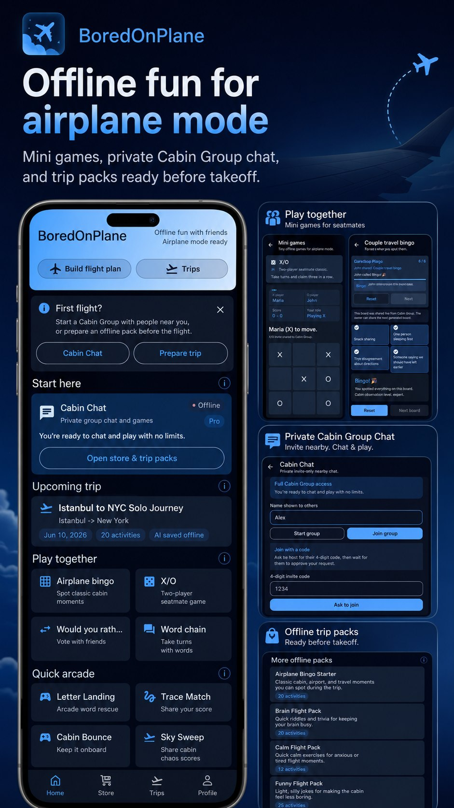
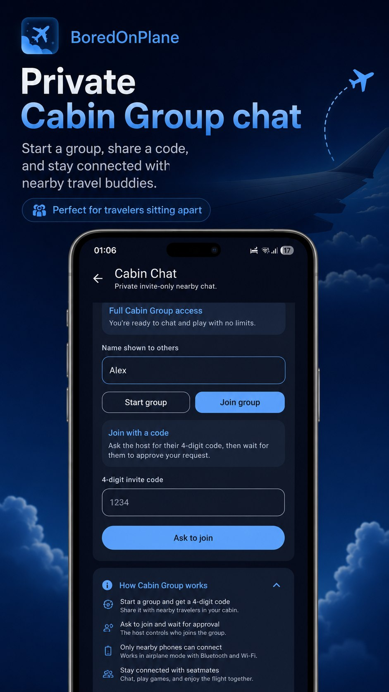
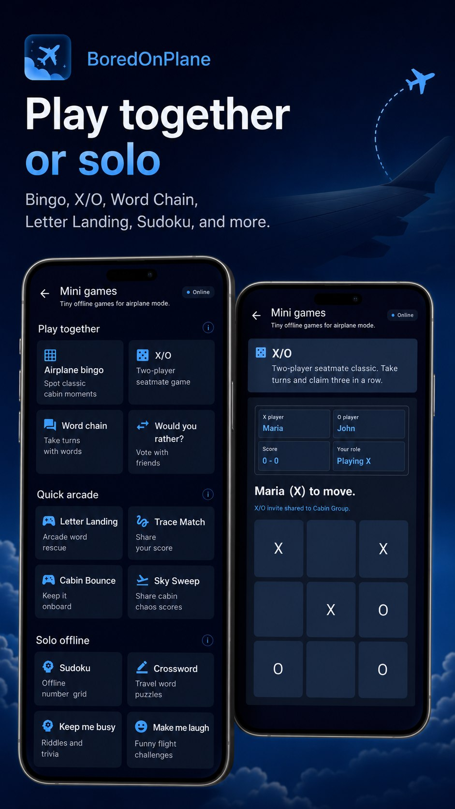
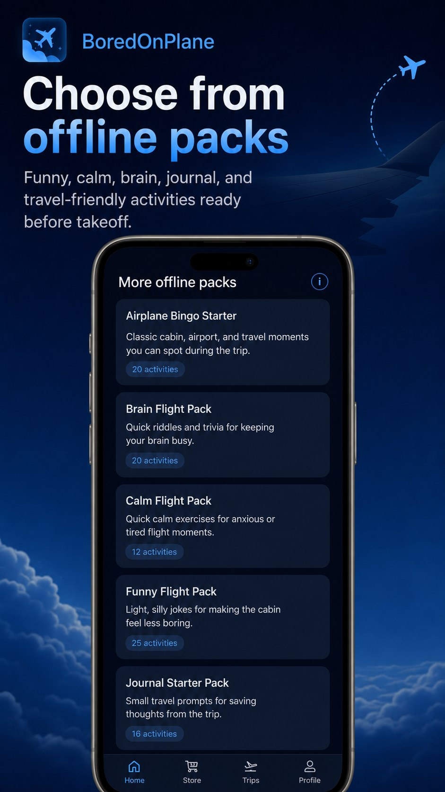
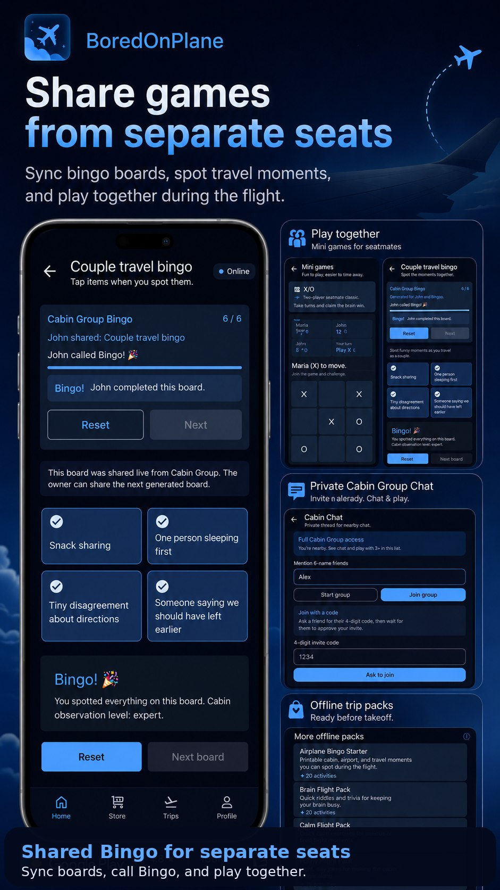
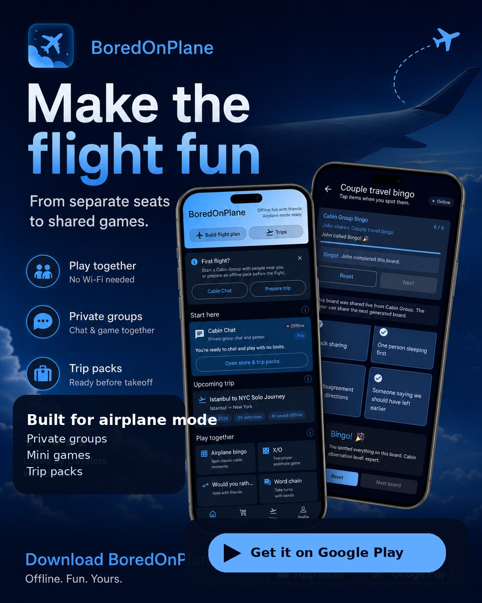

Built For Airplane Mode
Core activities are designed to work locally on your device. The app should still feel useful when the cabin door closes and the network disappears.
Offline-first flight companion
A pocket-sized Android companion for long flights, quiet layovers, and airplane mode moments. Play mini games, start a private Cabin Group chat, share bingo boards, and prepare optional AI trip packs before takeoff.
Core activities are designed to work locally on your device. The app should still feel useful when the cabin door closes and the network disappears.
When enabled, BoredOnPlane can ask Tomovium Core to generate a personalized offline pack for a route, then save that pack locally for the flight.
Google Play purchases can unlock Pro access or add trip-pack credits. Purchase verification happens through Tomovium Core for safer entitlement handling.
Pricing
BoredOnPlane keeps the core experience offline-first. Free users can try Cabin Group for 30 connected minutes; Pro unlocks a richer app experience, while optional trip-pack credits generate personalized offline activities before takeoff.
One-time unlock
$6.99
Unlocks Pro access for extra BoredOnPlane features and a richer offline flight companion experience.
1 trip-pack credit
$0.99
Prepare one personalized AI trip pack, save it locally, and use it later in airplane mode.
2 trip-pack credits
$1.49
Best for outbound and return flights: two personalized trip packs at a lower price than buying separately.
How it works
BoredOnPlane is designed around the reality of travel: you may have internet before boarding, then nothing for hours. The app keeps built-in activities local, and generated trip packs are saved on-device so they are ready later.
Inside the app
These current app previews show the core experience: offline flight games, private nearby Cabin Group chat, shared bingo, and optional trip packs that are ready before the network disappears.






FAQ
Yes. Built-in mini games, calm prompts, and saved trip packs are designed to remain available locally once you are offline.
Cabin Group creates a private nearby session for approved devices, so travelers can chat, share activity events, and play supported games together.
Optional AI trip packs generate route-inspired activities before takeoff, then save them locally for the flight.
Accounts are not required for the current experience. Most content stays on the device. Online calls are used for configuration, purchase verification, entitlement checks, and optional AI trip-pack generation.
For help, purchase issues, privacy questions, or app feedback, contact support@tomovium.com.